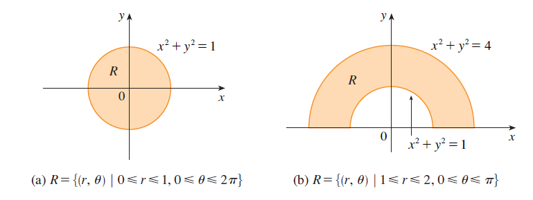

As coordenadas polares são especialmente úteis quando a região de
integração possui fronteiras circulares, radiais ou descritas naturalmente
em termos de distância à origem e ângulo. Nesta seção, construiremos o
elemento de área polar, compreenderemos a origem do fator \(r\), aprenderemos
a transformar integrais duplas e aplicaremos o método ao cálculo de integrais,
volumes, áreas de regiões polares e áreas de superfícies.
1. Por que mudar de coordenadas?
Em coordenadas cartesianas, um ponto do plano é representado por
\((x,y)\). Essa descrição é muito conveniente para regiões limitadas
por retas ou por gráficos de funções de \(x\) e \(y\). Entretanto,
regiões circulares podem produzir limites relativamente complicados.
Por exemplo, o disco
\[
x^2+y^2\leq R^2
\]
pode ser descrito em coordenadas cartesianas por
\[
-R\leq x\leq R,
\]
\[
-\sqrt{R^2-x^2}\leq y\leq\sqrt{R^2-x^2}.
\]
Em coordenadas polares, a mesma região possui a descrição muito mais simples
\[
0\leq r\leq R,
\]
\[
0\leq\theta\leq2\pi.
\]

Regiões circulares e anulares são exemplos naturais de situações em que
a descrição polar simplifica os limites de integração.
2. Relação entre coordenadas cartesianas e polares
Em coordenadas polares, um ponto é descrito pelo par \((r,\theta)\),
em que \(r\) representa a distância do ponto à origem e \(\theta\)
representa o ângulo medido a partir do semieixo positivo de \(x\).
\[
x=r\cos\theta.
\]
\[
y=r\sin\theta.
\]
Elevando as duas relações ao quadrado e somando,
\[
x^2+y^2
=
r^2\cos^2\theta+r^2\sin^2\theta.
\]
Como \(\cos^2\theta+\sin^2\theta=1\),
\[
x^2+y^2=r^2.
\]
\[
r=\sqrt{x^2+y^2}.
\]
Quando apropriado,
\[
\tan\theta=\frac{y}{x}.
\]
Relação geométrica entre \((x,y)\) e \((r,\theta)\):
\(x=r\cos\theta\) e \(y=r\sin\theta\).
3. Transformações frequentes
\[
x=r\cos\theta,
\qquad
y=r\sin\theta.
\]
\[
x^2+y^2=r^2.
\]
\[
x^2=r^2\cos^2\theta.
\]
\[
y^2=r^2\sin^2\theta.
\]
\[
xy=r^2\sin\theta\cos\theta.
\]
Quando suspeitar de coordenadas polares?
A presença de \(x^2+y^2\), círculos, discos, anéis, setores circulares
ou curvas fornecidas por \(r=h(\theta)\) é um forte indicativo.